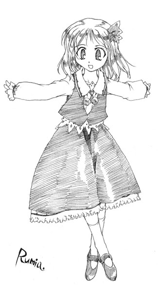

Youkai
Uncontrolled Violent Mystical Power
Main info
Usual threat level: Varies
Frequency of encounter: Varies
Variety: Very High
Places likely to be encountered: Anywhere
Times likely to be encountered: Anytime
Characteristics
There are many types of youkai with extremely varied powers. Some races have a great number that are all categorized under a certain name, while others can be as few as a single member.
These unique youkai are not called by whatever individual species they may be, but simply "youkai."
Many of the youkai in Gensokyo fall into this "youkai" section.
Rarely if ever is there any commonality in their appearance, ability, character, danger level, or times and places of activity.
Just about the only thing in common between youkai is that they attack and prey upon humans.
There are definitely exceptions, but many fall towards this trend.
- Youkai have longer lifespans than humans.
- Youkai have stronger bodies than humans, so even if they're split into five parts, they heal right away.
- Youkai are more easily affected by belief than humans, and as a result spiritual damage can cause fatal wounds.
- Youkai generally do not move in groups.
- Youkai only think of themselves.
Youkai are the most dangerous enemies to humans.
However, since they are rather varied, one must be informed of each of their traits before heading out to exterminate them.
Potential Harm
Kidnapping, Prededation, Livestock Theft, Crop Theft
Humans have no greater enemy than youkai.
Youkai attack humans for food.
However, most do not attack when they are full and satisfied.
If the human population drops, youkai will face trouble as well.
They do not eat only humans, but animals, birds, fish, vegetables, fruits, alcohol and other things humans normally eat.
Still, they consider humans a delicacy above all else.
They steal crops and livestock as well.
This is also serious problem.
Countermeasures
Unless one thoroughly trains in fighting against them, youkai extermination is difficult.
Youkai have a history of being physically stronger than humans, and trying to fight them may quickly end up as feeding them.
However, the reason most youkai attack humans is because they need prey.
That's why one should offer something else to eat in place of themselves.
Offering a cow will save you from being attacked for a while.
There are many that have a strong sense of duty, and will befriend those who do not turn against them.
But exterminating youkai is a different story.
Humans regularly perform exterminations, but this is a custom passed down from ancestors.
In Gensokyo, humans must exterminate youkai.
There are those that specialize in youkai extermination.
For example, the Hakurei shrine maiden is the most well-known specialist.
In extermination, one does not use weapons that cause physical damage. Weapons with an "origin" are more preferable.
Youkai are weak to spiritual attacks such as names or traditions.
Rumia
Youkai of Twilight

Ability: Manipulation of darkness
Threat level: Medium
Human friendship level: Low
Main place of activity: Unknown
Rumia falls into the weaker category of youkai, but she possesses an ability that makes her surroundings dark whether it is night or day.
The darkness this youkai emits is a magical darkness that renders even torchlight useless, and humans that wander into this darkness have their field of vision reduce to almost nothing.
It is simple to drag people into the darkness and attack them, but she does not move with a group of other youkai, which is a relief.
Her appearance is that of a young girl with red eyes and a red ribbon in her blond hair. It is said that she wears dark clothes to blend in with the darkness, but since it is always dark around her this is difficult to confirm.
Perhaps because she is known as a monster of darkness and is normally feared, people who have directly seen her form discover a young girl and are overcome with relief.
It is possible that she covers herself in darkness to hide her appearance.
Also, it is said that her ability to manipulate darkness is only a supporting ability, and that she uses pure power to attack humans.
Since she looks like what she looks like you cannot tell if she is really strong or not, but it isn't possible to fight against her in the darkness.
Not being able to see a way out is frightening.
Eyewitness Reports
I saw a large blob of darkness heading towards the forest. It was scary.
The large blob of darkness is believed to be this youkai.
You must not approach it.
Then the large clump of darkness bumped into a tree and looked like it stopped moving for a bit, but it came towards me so I ran away.
She most likely bumped into a tree.
Perhaps she cannot see outside the darkness either.
I was too slow in escaping and got caught in the darkness, but I didn't encounter the youkai and slipped right through.
Even if a human enters the darkness, the youkai inside might not notice.
If that is the case, she most likely cannot see in the darkness she produces.
Countermeasures
Since a human's power can't compare to a youkai's in the first place, it would be impossible to put up a fight within darkness that renders even torchlight useless.
The best way to deal with this would be to not enter the darkness unless you are very confident in your abilities.
You should also avoid visiting places where the moonlight doesn't shine at night.
Rumia may be lurking there.
Rarely, there are cases of people who have run into Rumia while she was not emitting darkness.
This was on the night of the new moon.
This seems to be the most common time when Rumia somehow cannot use her powers, and witness reports flood in.
There aren't many who have exchanged words with her, but it is doubtful you will be able to talk with her.
It's probably dangerous to attempt a conversation.
Letty Whiterock
Youkai of Winter

Ability: Manipulation of cold
Threat level: Medium
Human friendship level: Low
Main place of activity: Unknown (Winter only)
There is a youkai that has only been seen during winter.
A youkai that prefers cold places, Letty Whiterock is feared for ensnaring humans and freezing them, rendering them powerless to fight back.
To keep it simple, she is a type of Yuki-onna.
This youkai appears as a woman wearing light clothing that doesn't seem like it would protect her from the cold.
She appears during unusually cold days, though it is unknown whether the coldness is due to her appearance instead.
The extreme coldness might make you lose any will to fight.
If caught by her tricks, it isn't an exaggeration to say that the fight is over before it even began.
It does not mean that she directly makes the wind blow and snow fall, but since she can enhance the winter that exists within nature, she can exhibit ridiculous powers which seem impossible for one youkai.
Despite being controlled by nature, her power is extremely strong.
After causing a thorough riot during winter, she suddenly disappears when spring comes.
It seems she hides somewhere until the next winter.
Eyewitness Reports
I only see her on cold days.
robably because of such reasons, this youkai does not leave a good impression.
When there is a snowstorm outside, I can't go outside because I'm afraid she might appear. However, my house is safe because it has good heating.
I would advise that people go out only on clear days during winter, if possible.
However, if you shut yourself up in your house for a long time, the snow piled up on the roof will cause your house to collapse, so beware.
Countermeasures
The thing called cold air is very troublesome. It is not a physically thrown cold object, but something that lowers the temperature of the whole area.
Even healthy people can become sick. Even active people become inactive. They lose their fighting spirit.
There may be no way to completely avoid it.
First and foremost, wear warm clothes.
This is the most important thing.
It is enough if your body can move while you flee.
In particular, if the extremities of your body become cold, your circulation might worsen, so you should take care to eat well.
If you are careless and happen to see her while wearing light clothes, it is hopelessly difficult to escape, because the coldness extends for a wide range.
If you are not resistant to the cold, it is unlikely you will survive for long.
However, even though this youkai is fearsome, she only appears during winter.
When spring comes and it becomes warmer, there is nothing to fear.
If you find this youkai during summer, it might be your best chance to strike.
Wriggle Nightbug
A Bug of Light Wriggling in the Dark

Ability: Manipulation of insects
Threat level: Medium
Human friendship level: Normal
Main place of activity: Bushes, clumps of grass, etc.
When it comes to youkai humans find unpleasant, Wriggle Nightbug is a good example.
As to why she's considered unpleasant, she always appears with a large number of bugs and can control them at will.
Just imagine being simultaneously attacked by centipedes, caterpillars, moths, spiders, and cave crickets.
It makes your hair stand on end.
This youkai appears similar as a human child.
Fortunately, she doesn't look completely like a bug. She only has antennae and wings but other than that, she doesn't look any different from a human.
Wriggle is a bug youkai, but to be exact, she's a firefly youkai.
Fireflies, unlike most bugs, are popular with humans.
Since this type of bug can avoid being exterminated by humans, it's easy for them to mature into youkai.
In addition, butterflies are similarly quite popular with humans, so it's easy for them to become youkai.
Long ago, bug youkai were equal to oni and tengu in terms of inspiring fear, but lately they've lost that prestige.
The fact that this bug youkai, who could be called the bugs' leader, has the appearance of a young girl could be considered a symbol of this.
The reason why the bugs' power has radically declined needs to be investigated.
Eyewitness Reports
I lifted up a big stone and there were a whole bunch of bugs under it. It was gross.
This may not have much to do with this youkai, but it's technically a report regarding bugs.
There were a clump of centipedes under the overhang of my roof. I wish they'd go away.
This may not have much to do with this youkai.
There was a cave cricket at my back door. I hate those things.
This has nothing to do with this youkai.
Countermeasures
The thing that makes bugs frightening is their numbers.
Individually they don't have much power, but when they come in large groups they're hard to deal with.
This is particularly true for bugs such as hornets; while killing one or two means nothing, if they land one sting it can kill a human.
The most effective countermeasure is building a fire and using fumigation in order to keep bugs away from a large area.
Also, they're generally weak to the cold.
They're active from spring through fall, but they almost never show up during winter.
Although her control of bugs is frightening, there isn't much that is dreadful about facing Wriggle Nightbug herself.
If you're trying to exterminate youkai, your best bet is to go after this youkai during winter when she's alone.
Also, among the bugs that this youkai uses, the ones you need to be most careful of are the harvest mites.
Harvest mites are devil bugs that can't be seen by the human eye, and you don't even notice that you've been bitten.
Later, small black bite marks will appear, but by then it's too late; you'll get a high fever and collapse, and there is a high probability of death.
There is no effective treatment.
If Wriggle doesn't seem to have any bugs with her and yet looks highly confident, that is when she is the most dangerous.
She could have harvest mites lurking around her.
Mystia Lorelei
Night Sparrow Youkai

Ability: Causing bewilderment with her song
Threat level: Medium
Human friendship level: Poor
Main place of activity: Roads at night
There are relatively many youkai who use songs or cries to bewilder humans on dark roads or in deserted forests at night.
Mystia Lorelei is one of them.
A singing voice from nowhere in particular without a source in sight can be heard, and while one is taken by that voice they lose their way and are attacked by youkai.
She is not often seen during the day and there are few witness reports, but it is said that she is a humanoid youkai with large wings.
Mystia's songs are unexpectedly vibrant, and have an energy that would not normally be expected from youkai.
Because of this, she is popular amongst the young people.
On the other hand, amongst the elder song youkai, they say, "The young youkai lately are just loud and sing senseless songs. They're such an annoyance; it's nothing but noise."
She also possesses an ability to make humans night-blind with her song as well.
If one continues to follow the faint light and song on a night road, they will most likely be attacked by this youkai.
Eyewitness Reports
I thought that the Prismriver Ensemble hired a vocalist, but when I went closer nothing good came of it.
Unlike the Prismrivers, her friendliness towards humans is considerably bad.
Even if you hear a singing voice, you should not approach out of curiosity.
While walking along an animal trail, I saw a single food cart decorated with red lanterns. Wondering what it was I went closer, turns out it was the night sparrow's stand.
There are rumors that she has started a food stand.
Perhaps youkai can also become bored.
That's definitely not a night sparrow!
I think so, too.
Countermeasures
The only time anyone is affected by this song is when they are walking alone.
If walking in pairs, the person who becomes bewildered by the song can be brought back to reality by the other person who is yet to be affected, so attacks in those situations are very rare.
The countermeasure would be to not walk alone at night.
This is not just limited to this youkai, but is the most basic form of protection against other youkai.
So, how does one deal with becoming night-blind?
Eating lamprey is good for that.
If you eat some every day, your eyesight will gradually improve.
What must one do to exterminate this youkai?
Since there is little chance of defeating her at night, you must resort to doing it during the day, but since she hides during the day that is not a simple task.
The most effective extermination method is to set up a trap in the evening, and if you find that she is caught in the trap by morning, extermination follows from there.
If you do not regularly exterminate this kind of youkai, they will eventually appear in the human village, so make sure to exterminate them once in a while.
Hong Meiling
Chinese Girl

Ability: Using qi
Threat level: Low
Human friendship level: Normal
Main place of activity: Scarlet Devil Mansion
Hong Meiling is one of the youkai that lives in the Scarlet Devil Mansion.
She works as the gatekeeper, and thus meets humans more than the other residents of the Scarlet Devil Mansion.
She is skilled in martial arts, and doesn't have many unusual youkai-like powers.
Her appearance is no different than a human's. She wears a Chinese-style outfit, and moves lightly.
Unlike other youkai, she does not specialize in a single ability, but is well-rounded.
Because of that, she's not particularly strong compared to other youkai, but she has no blind spots when facing humans.
Nor has she any particular weak point.
It can be assumed that she was given the job of gatekeeper because of this.
She is unusually human-like for a youkai, and if you talk to her while she is on the job, she will make idle chatter or complain about whatever is on her mind.
She may threaten you with words, but as long as you don't try to break through the gate, she will rarely attack.
You would even think that the person you're talking to might be a human.
Eyewitness Reports
The Scarlet Devil Mansion is terrifying, but thanks to that gatekeeper, it feels friendly.
Even so, the fact that terrifying youkai live inside doesn't change.
In the morning, when I looked towards the Scarlet Devil Mansion, I saw the gatekeeper dancing a strange, slow dance.
It is most likely Tai Chi Chuan.
You must not disturb her.
When I passed the Scarlet Devil Mansion at noon, I saw that the gatekeeper was sleeping.
She's most likely having a siesta.
You must not disturb her.
Countermeasures
Since her meals are provided by the Scarlet Devil Mansion, she isn't a youkai to be feared at all.
As long as you don't provoke her, she isn't dangerous.
You should refrain from breaking through the gate, or sneaking through while she's sleeping.
She'll attack you without mercy.
But even if that happens, if you immediately apologize and retreat, she won't chase you.
However, when it comes to extermination, things become extremely difficult.
As a master of martial arts, she is highly proficient in battle, and doesn't have any apparent weak points.
Also, since she seldom moves from the Scarlet Devil Mansion, other youkai may come and support her.
In order to exterminate her, the only way is to request a one on one battle with a time limit, and win by overpowering her through a direct attack.
In other words, she may be a good opponent to test your skills.
Medicine Melancholy
Little Sweet Poison

Ability: Manipulation of poison
Threat level: High
Human friendship level: Poor
Main place of activity: Nameless Hill
Even though youkai live long, naturally, new ones come into being as well.
Medicine Melancholy is one of these newborn youkai.
She was a discarded doll changed into youkai after a long time.
Her form is that of a large doll used in ventriloquism.
It is believed that the original doll from where she came was roughly that size.
Even after becoming a youkai, her body is still that of a doll.
It is believed that the ability to manipulate poison was naturally attained by being left on the Nameless Hill, where numerous lilies-of-the-valley bloom, for a long time.
She pours poison in food.
She uses poison to manipulate humans.
She's a threat to humans that are easily affected by poison.
Being a young youkai, her experience and knowledge is overwhelmingly shallow.
She possesses less knowledge than humans.
Because of this, whether she's dealing with a human or youkai, she doesn't know the meaning of holding back.
She also can't see how strong her opponent is.
Therefore, she is fearsome.
Eyewitness Reports
I thought it was a doll, but when I touched it my skin became inflamed.
Merely touching her will cause a bad reaction to one's body.
Terrifying.
The other day, this small youkai dropped by the village, but immediately ran away. Was that really a youkai?
It is thought that she has not seen a large number of humans.
However, you must never chase after her.
She may return to spread a poisonous fog over the village.
I saw a small doll hopping happily at the Nameless Hill. I wonder if the poison from the flowers there got to her.
Since she gives the impression that she's defenseless, that just shows that her experience as a youkai is shallow.
You shouldn't carelessly startle her until she matures.
Countermeasures
The type of poison is unknown.
There are many types of poison: flower's poison, snake's poison, bee's poison, spider's poison, poison that causes inflammation just by touching it and poison that knocks you unconscious just by whiffing it.
Because of that, if one is affected by her poison there is no definite treatment method.
You will probably understand the true terror of poison when you confront this youkai.
Even youkai suffer after being showered in the strong poison just by being near her.
At this point, it's not the time to be thinking about fighting.
Until this youkai develops mentally, refrain from exterminating her.
Her current weak point is her shallow experience.
She hates humans, but if you skillfully manage your words, you can deceive her easily.
Pretend to be a human that hates humans.
The strength of her poison is fearsome, and can leave aftereffects.
Poisons that remain latent for a long time and cause delayed effects are also dangerous.
You must avoid fighting her at all costs.
Yuuka Kazami
Flower Master of the Four Seasons

Ability: Manipulation of flowers
Threat level: Extremely high
Human friendship level: Worst
Main place of activity: Garden of the Sun
She lives surrounded by flowers all year round, and if anyone disturbs her, be they youkai or human, she eliminates them with tremendous power no matter what.
She's more like a manifestation of nature rather than a flower youkai, but unlike fairies, she is far more dangerous than any of the youkai introduced so far.
She is usually active in places surrounded by flowers, and seems peaceful at first glance but is merciless towards other creatures.
She wears bright clothes, and her appearance is no different from a human.
The ability to manipulate flowers is something to the extent being able to make flowers bloom, shift the face of sunflowers towards the sun, or make withered flowers bloom again.
This ability is more of an extra; she truly possesses extremely high youkai power and physical abilities. A youkai-like youkai.
She doesn't feel an atom of fear when fighting humans or youkai, and loves rubbing people the wrong way.
As youkai live longer, they become less active.
There are few that take the initiative to attack humans.
It is said that recently this youkai hasn't moved from the hill of flowers much.
Combat Ability
Completely unrelated to her abilities, she uses her umbrella and scatters flower petals to perform graceful attacks.
It is said that her umbrella is a special parasol that can largely cut ultraviolet rays and block rain as well.
It can even block danmaku.
Rather than relying on youkai abilities or magic, she often performs overwhelming physical attacks.
This class of youkai is not interested in the average human, and only pays attention to equally strong youkai or humans with special abilities.
However, when ones with power clash, both sides are aware that they cannot come to a conclusion easily.
To counter this, rules will often be decided beforehand and a formal battle will take place.
By fighting with these rules, even if one could continue after losing, they must admit their loss.
Once that is done, the other side will not continue further.
That is the wisdom of youkai who have lived long.
Eyewitness Reports
She came to the village to shop. She gives proper greetings, and she didn't seem like she's that strong, but...
The stronger the youkai, the more polite they normally are.
But you must not cross her.
I see her at the shrine a lot. I wonder if that shrine maiden will exterminate her...
The shrine maiden there is infamous for not doing her job.
However, it's said that she's exterminated this youkai several times.
I saw her at the Garden of the Sun. Her smile was terrifying, so I immediately ran away.
Strong ones are usually smiling.
Countermeasures
There are no countermeasures; it's impossible for ordinary humans to exterminate her. They can only be vigilant.
Luckily, she isn't interested in boring battles, so as long as you don't attack, set up a trap, or set her field of flowers on fire, you should be fine.
If you come across this youkai battling with someone else, do not get yourself involved.
However, these fights are based on certain rules, so as long as you do not disturb the fight, she'll be polite.
If you can keep your distance, it's also a good idea to watch.
Battles between non-humans are full of breathtaking beauty.
Yukari Yakumo
Youkai of Boundaries

Ability: Manipulation of boundaries
Threat level: Unknown
Human friendship level: Average
Main place of activity: Anywhere and everywhere
If I were to name one youkai that is the most youkai-like of youkai, that would be Yukari Yakumo.
She is a youkai with whom few would choose to associate. Besides the fundamental danger of her ability, she tends to be elusive and her behavioral principles are completely different from those of humans, to name a few of her issues.
Her appearance is not especially different from that of a human.
She prefers extravagant clothes, and is often seen with a large parasol.
Her main time of activity being at night, she sleeps in the daytime.
All in all, she is a traditional youkai.
Though she claims to hibernate through the winter, we have only her word on it and it's unknown where she lives, so this is unconfirmed.
There is an article in the Youkai Encyclopedia from Aichi's Gensokyo Chronicle from long ago that seems to describe her.
It appears she existed back then as well.
Ability
The ability to manipulate boundaries is a terrifying ability capable of fundamentally undermining reality.
As far as we know, everything is built upon the existence of boundaries.
If there was no water surface, there could be no lake.
If there was no sky line, neither mountain nor sky could exist.
Were it not for the Great Barrier, even Gensokyo itself wouldn't exist.
If there were no boundaries, everything would probably exist as a single enormous object.
Thus, the ability to manipulate boundaries is by logic an ability of creation and destruction.
It essentially creates a new being, or rejects the existence of a being.
Among the abilities youkai are known to possess, this is one of the most dangerous, being comparable even to the power of gods.
She is also capable of moving to an entirely separate location between gaps in space, whether it be her entire body or only a part of her.
It's said that this ability is not limited to physical space, but also applies to pictures, others' dreams, and even stories.
In addition, she possesses superhuman intellect, especially concerning mathematics.
Furthermore, due to her long lifespan, she has a wealth of knowledge and experience.
Daily life
She is actually quite talkative, and is willing to teach you about herself or about Gensokyo.
However, most of her stories are impossible to prove or confirm, so no one can say how many of them are true.
Her house is said to be located at the boundary between Gensokyo and the outside world, just like the Hakurei Shrine, but no one has ever actually seen it.
This is because she moves through gaps in space, so she seems to appear out of nowhere and disappear into nothing.
No one can follow her through the gaps, so it's not known if it's true or not.
In addition, she rarely does things herself, leaving practically all of her work to a beast she controls as a familiar instead.
The familiar acts in her place while she is sleeping, mostly during the day or in winter.
Also, as she has lived a long life, she has many friends that are similarly long-lived.
Most of her friends are youkai of the strongest class, like Yuyuko Saigyouji of the netherworld and the oni Suika Ibuki (both described later).
Connection to Gensokyo
Gensokyo is separated from the outside by a large magical barrier.
This barrier could be seen as the boundary between inside and outside.
However, the inside world and the outside world are still physically contiguous, so it may be logically said that the barrier created the place that we call Gensokyo.
That also means that as long as the youkai of boundaries exists, she can create or destroy a place like Gensokyo whenever she desires.
It can be claimed that the fact that a youkai of boundaries exists in somewhere Gensokyo, a land surrounded by an enormous boundary, implies that she must have some deep, vital connection to its formation.
Strangely, this youkai rarely attacks humans.
A youkai that never attacks humans is by definition not a youkai, so it is assumed that she does somewhere.
As she can freely visit the outside world, it's speculated that she attacks humans in the outside world.
Anecdotes About This Youkai
Genso-Lunar War
This is a story from over 1000 years ago.
It is said that she once invaded the moon by modifying the boundary between truth and falsehood and plunging into the moon's reflection on the lake's surface.
Although she went in with an army of impudent youkai, they were crushed by the Moon's advanced weaponry.
It is believed because of that incident, youkai usually do not choose to attack outside their territory.
The stories of this event are also what made her powers widely known among humans.
Youkai Expansion Project
A story from over 500 years ago.
The project refers to a plan designed and implemented by Yukari in order to restore power to the youkai of Gensokyo, who felt pressured by the increase in the human population.
Until then Gensokyo was merely an isolated mountain town, but she planned to create the boundary of phantasm and substance around Gensokyo, thus logically creating a new world.
By establishing Gensokyo as an illusionary world, and the outside as the real world, the youkai weakened by the outside world would naturally flock to Gensokyo; this was a truly epochal event.
At this time, it seems that youkai from outside of Japan immigrated to Gensokyo, as well.
The effects of the boundary continue even now.
The cleverness of the plan lies in allowing youkai to disappear in the outside world while permitting them to thrive within Gensokyo.
As long as the outside world remains in the hands of the humans, Gensokyo will be ruled by the youkai.
The Great Barrier Disturbance
This, of course, refers to the Great Hakurei Barrier.
It is said that this youkai was one of those who suggested the creation of the Great Barrier and created what is now Gensokyo.
However, it appears that there was some opposition to this plan from a number of youkai, and there was open conflict between them.
As this conflict distracted youkai from their normal attacks against humans, the Great Barrier has received great praise from those living in Gensokyo.
Word of the usefulness of the Great Barrier has now circulated among the youkai, and there are scarcely any that oppose its existence now.
The Phantom Disturbance
The Phantom Disturbance refers to a time when the border between the Netherworld and the world of the living weakened, making it easy for the respective denizens of each to cross through it.
It is obvious it was the doings of this youkai.
Since this was the act of an extremely wise youkai, there was likely some extraordinary benefit to youkai society in doing this.
As this is an ongoing incident, the matter remains unresolved.
Eyewitness Reports
She makes my food disappear right out from under my nose, even when I'm careful about it. I wish she'd stop.
When you're not looking she can slip her hand through a gap in space and take things from far away.
She keeps poppin' into my house and I wish she'd cut it out. Can't she at least use the door like a normal person?
One should exercise restraint when using the power of teleportation.
Countermeasures
She seldom appears in the human village.
Barring unknown circumstances, she likely doesn't attack normal humans very often.
No matter how confident one is in their abilities, it would be wise not to attempt to exterminate this youkai.
Though, she would likely make allowances for the power of her opponent so as not to allow the battle to become too one-sided.
In any case, there is neither any sort of defense against nor weak point in the ability to manipulate boundaries.
Her intellect far surpasses those of humans, and her physical strength is what you'd expect from a youkai.
Humans probably have no chance of winning against her.
Excepting, of course, the countermeasure of approaching her in a polite manner.